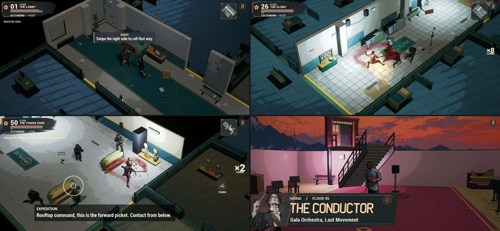

100 Floors of Zombies
They sold a home where nobody dies. It delivered.
The iPhone beta is open
Scan with your iPhone's camera, or tap the button on your iPhone. You will need Apple's free TestFlight app.
Get told when the beta opens
An isometric sword game for iPhone. Rin, a dismissed bodyguard, climbs a sealed 100-floor tower with her family's sword, one room at a time. The residents are still at work. They would like you to stop calling them zombies.
In development
Live from the tower
Real footage from development builds, floor by floor. Nothing here is final, and all of it is playable.
The premise
Live forever. Never leave.
Hōrai Tower sold its residents more than a flat. It sold them Eternal Residency: a home, plus a lifetime course of the company's anti-ageing treatment.
On the night of the Ascension Gala the founder released the final dose through the ventilation, to twelve thousand people at once. It worked. None of them can die. They just stopped being people. The shutters came down and the army fenced off the block.
Then Rin's phone buzzed. One text from the founder's daughter, on the top floor: Come up. Please.
The story and the tower
How you play
Cut. Roll. Play your hand.
Left thumb moves. Right thumb cuts. Swipe to roll through a swing, chain a combo when the ring turns gold, and spend your Ultimate when the room fills up.
Between floors you draw from a 52-card deck painted for the tower. Five cards are in play, and the poker hand they make is your power: a pair is one thing, a straight flush is another. Every third floor you can keep the hand or change up to three cards.
Every fifth floor has a guardian with its own fight. They talk. They object to the z-word.
Dev log
What's new
What changed, what broke, what we learned. 19 posts so far, starting from the first night.

The Envoy, and every guardian in phrases
Sounds, a size check that found a broken build, and a long day on the Envoy that ended with the real reason his body kept vanishing. Then every guardian's fight is rebuilt from short mixed phrases, and a new build goes to TestFlight and Android.

Full rooms, a new Galahad, and one black frame
The evening after the six endings. Every guardian's room is dressed to its story, Galahad is rebuilt from a drawing, the ultimate gets an impact frame and a proper landing, and the phone turns out to have been drawing a quarter of its pixels.

Six ways to finalise a guardian
This morning one boss had an ending of his own. By the afternoon every guardian but one shares six, dealt at random, and the building's PA has something to shout.

The tower's people
The staff are still on shift
A maintenance chief who will not stop the pumps. A head of compliance who quotes conduct policy at you. A night nurse with ice in her hands. A gardener who came back perennial.
The surface is funny and the story underneath is not: a promise, a plague, a father, a mercy. Rin is the straight man in all of it.
Meet the castHow it's made
One developer, one AI agent, and no level files.
Unreal Engine 5.8 · C++ · Blender · Remotion · ElevenLabs
The tower is generated in code. Characters are rigged by scripts, never by hand. The game plays itself in automated climbs to find what is broken. We write all of it down.
The technique

Timeline
From a late-night idea to a test build
The two most recent days. The whole story, day by day, is on the timeline page.
Day 6
A tester, a finisher, and a long eveningThe build that never reached TestFlight finally does, the first tester writes back, and one boss's ending becomes six shared by nearly all of them. Then the evening: the guardians' rooms are dressed, Galahad is rebuilt from a drawing, and the ultimate gets an impact frame.
- Really on TestFlight
Two uploads were dropped by Apple without a word on screen. The third is there, and was checked.
- A boss cut scene
Six guardians and the ultimate, narrated.
- The first tester's notes
A longer roll, softer cuts, and a flick that rolls while holding to cut.
- The Porter's own ending
A finish call, a launch, thirteen cuts in slowed time, and a line about delivery.
Read the post - Six shared endings
Every guardian but one gets a finish call, six endings dealt at random, and a PA that shouts FINALISE HIM!
Read the post - The endings rebuilt
A launcher, an air cut, a dive and a real sheathing, all from clips that were already in the project.
Read the post - A sharper phone
The newest iPhone had been drawing a quarter of its pixels. The setting is raised; not yet measured on a phone.
- Full rooms
Every guardian's room dressed to its story: wall pieces, signs, litter and a marking on the floor. No fight is changed.
Read the post - Galahad, from a drawing
His own body and moves, and a shield that took four tries to become an oval of light over his hand.
Read the post - One black frame
An impact frame on the ultimate's kick, one of ten at random, and a landing that no longer leans back.
- Sparks, steam and butterflies
An effects pack in the guardians' rooms and at the moments of their fights.
Day 7
The Envoy, and every guardian in phrasesSounds go in, a size check finds the last build was missing its new art, and the Envoy is rebuilt four times before the real reason his body vanished turns up. Then every guardian's fight is made of short mixed phrases, and new builds go to TestFlight and Android.
- Fourteen sounds
Gunfire, a drawn weapon, explosions and a roar, in under five megabytes.
- A size check
Most of the app is the engine and a few art packs. The last build was missing Galahad and the effects; the pack list is fixed.
- Why the Envoy vanished
A recoil clip played as a whole pose drew his body as a single point for every volley.
Read the post - Every guardian in phrases
27 new floor attacks, mixed into short runs, never the same one twice.
- New builds
On TestFlight, marked valid by Apple, and an Android build.